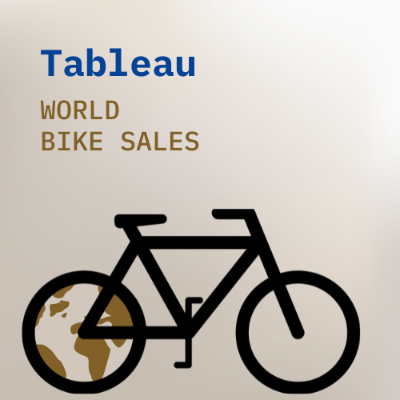
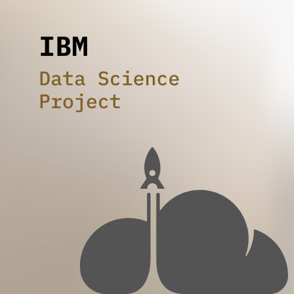
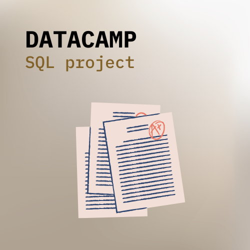
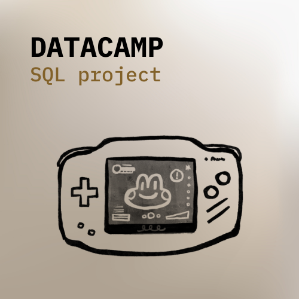

Analyzed data using Tableau to compare sales and profit ratios across different countries, examining the variations in profit growth from year to year.

We used Python and SQL to predict the successful landing of the first stage of SpaceX's Falcon 9 rocket. By analyzing various rocket variables and their relationship to the outcome, our goal was to determine the conditions under which the rocket would land successfully. Additionally, we built an interactive map with Folium and an interactive dashboard with Plotly Dash to visualize our findings.

In this project, we utilized SQL queries to analyze standardized test performance data from NYC's public schools. Our aims included identifying schools with top math results, examining performance variations by borough, and identifying the city's top ten performing schools.

In this project, our goal was to investigate whether Netflix's movies are becoming shorter over time. We employed various techniques, including lists, loops, Pandas, and Matplotlib, to conduct exploratory data analysis.
In this project, the data we explored is contained in several different datasets. To understand the world's oldest businesses, we first needed to use joining techniques to merge our data. From there, we utilized manipulation tools such as grouping and filtering to answer questions about these historic businesses.

In this project, we analyzed video game critic and user scores, along with sales data, for the top 400 video games released since 1977. Our aim was to identify a potential 'golden age' of video games by determining the release years that received the highest ratings from both users and critics. Additionally, we delved into the business aspect of gaming by examining game sales data.